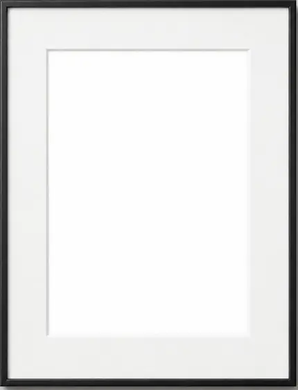
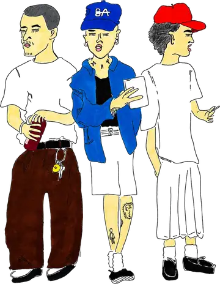
01/ 08
3人
THREE


THREE
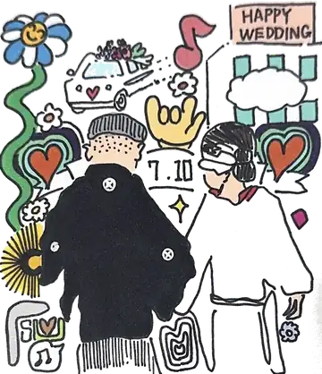
HAPPY WEDDING
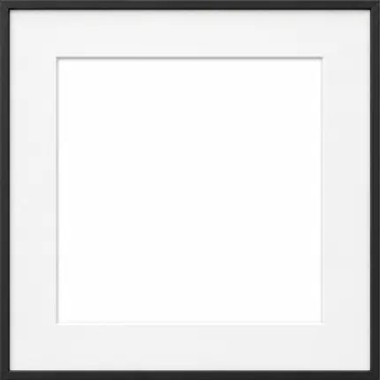
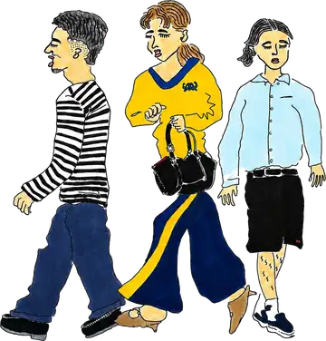
WALK
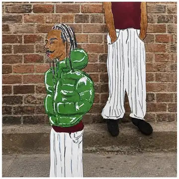
ON THE WALL
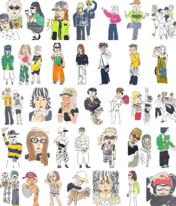
STREET SKETCHES
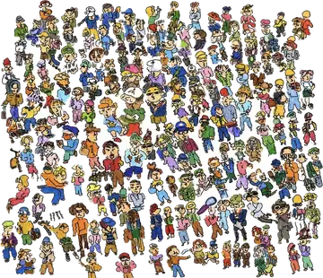
CROWD
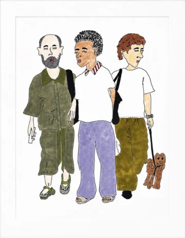
THREE AND A DOG
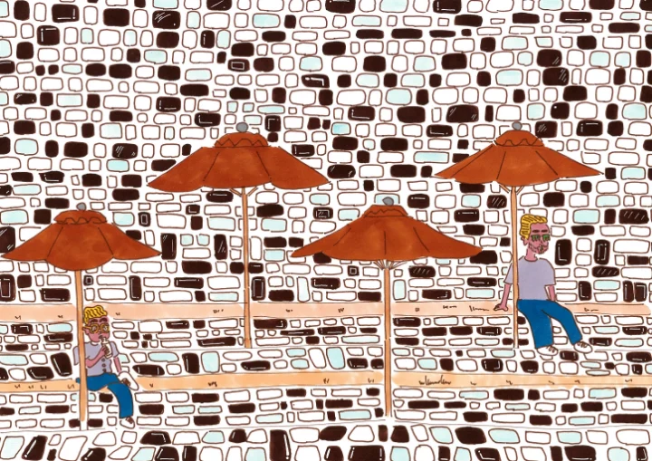
PARASOLS
MORE WORKSほかの作品
依頼で描いたもの、その日のスケッチから。
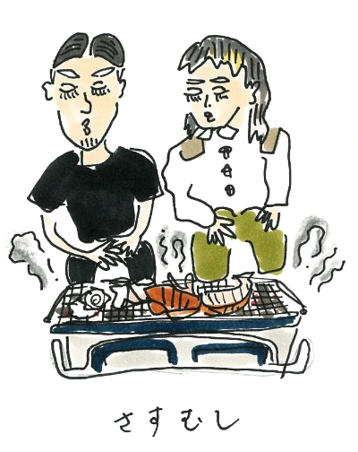
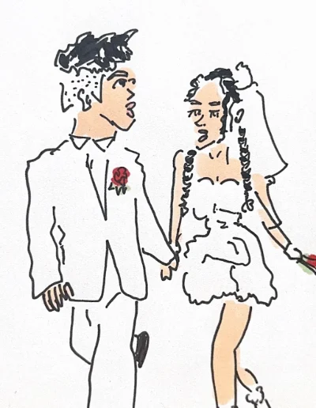
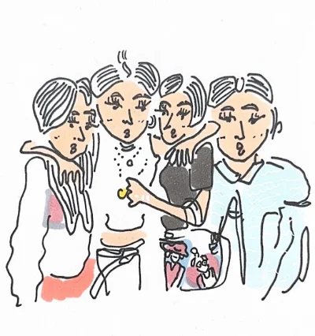
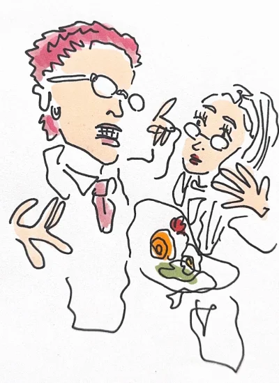
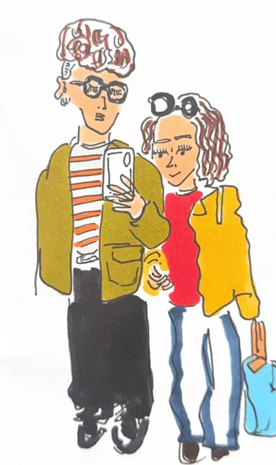
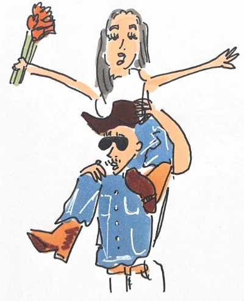
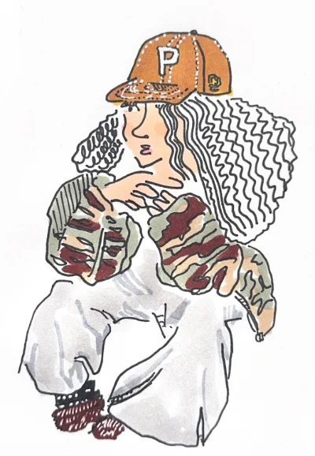
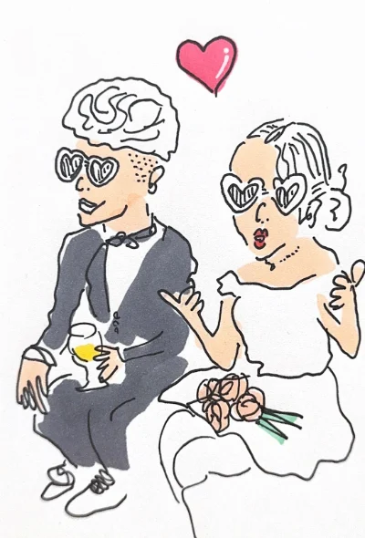
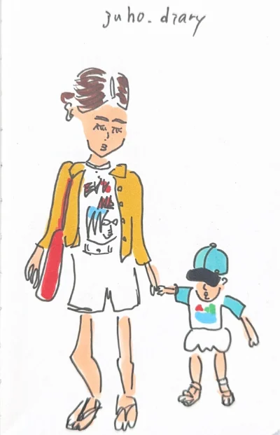
SKETCH ARCHIVEスケッチ一覧
日々のスケッチから。ひとりずつ、街で見かけた人を描きためています。
71SKETCHES
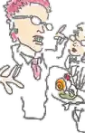
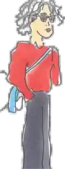
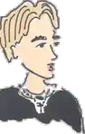
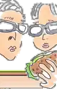
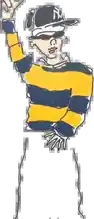
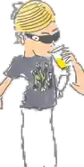
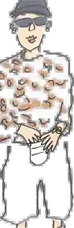
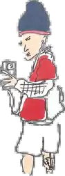
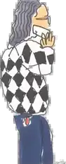
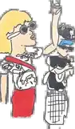
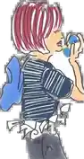
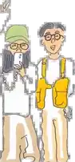
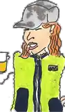
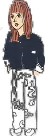
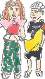
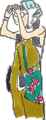
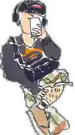
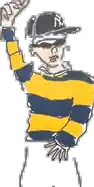
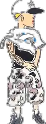
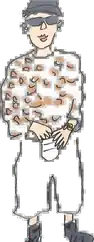
掲載しているのは一部です。用途に応じて個別にお見せできます。
LINE STICKERLINEスタンプ
ゆるくて、ちょっとおしゃれ。日常の会話で使いやすい15種類です。
COLLABORATION実績 — ドラッグでめくる
END OF
COLLABORATION
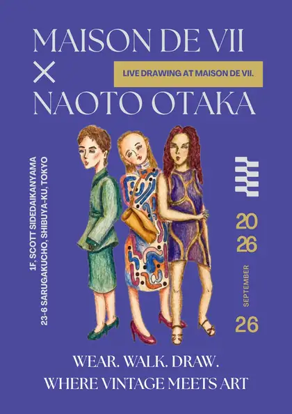
01aLIVE DRAWING
TOKYO, DAIKANYAMA
代官山のヴィンテージセレクトショップ。店頭でのライブドローイングを行いました。テーマは WEAR. WALK. DRAW. ── 着る、歩く、描く。
NEXT — LIVE DRAWING
RECORD IN PROGRESS
ライブスケッチの記録。撮影が終わり次第、このページに掲載します。
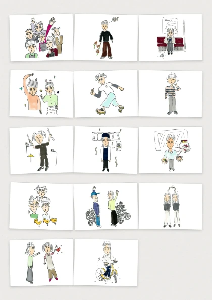
03aILLUSTRATION
DEAU NI AU 2026 A/W
2026年 秋冬キャンペーン「であうにあう」のイラストレーション。寄せられたエピソードに、一本ずつ絵をつけました。